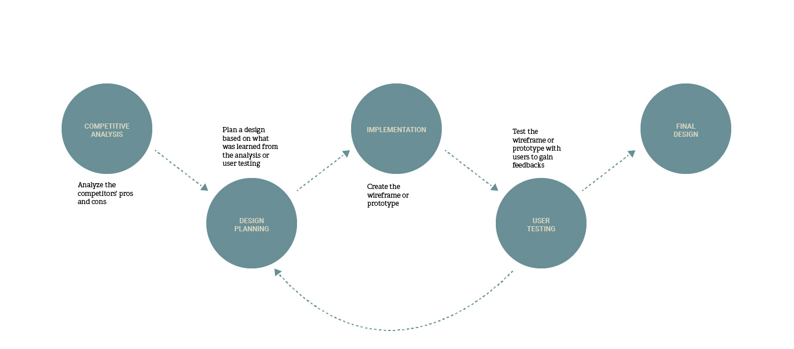
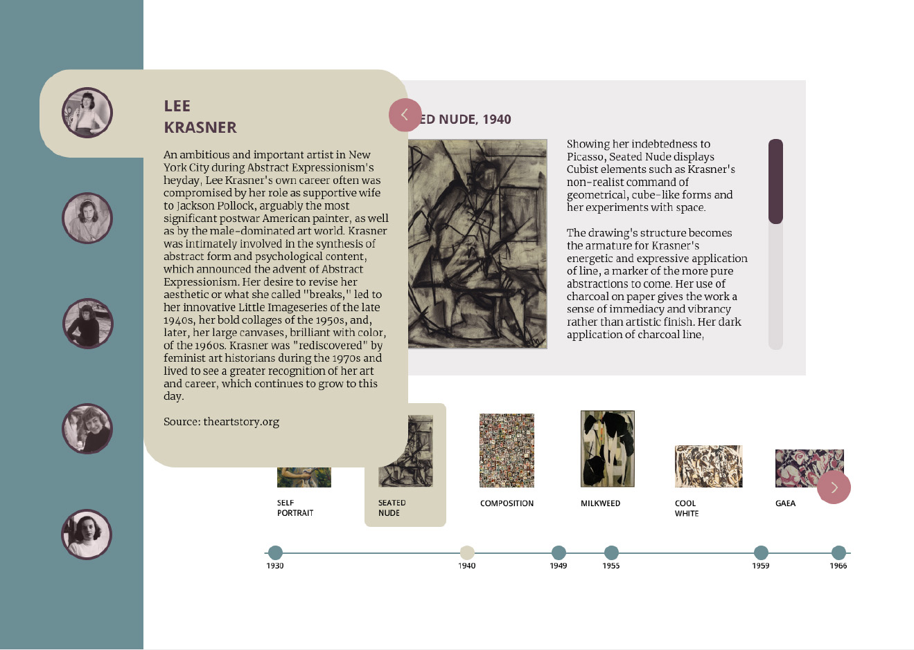

Creating an informative interactive tool that allows the users to learn about
the women Abstract Expressionist artists and their artworks.
The
Process →

Competitive Analysis →
ANALYZE AND LEARN FROM EXISTING WEB PAGES
ABOUT WHAT TO INCLUDE OR AVOID IN THE DESIGN.
THEN, LEARN ABOUT THE COMPETITORS' WEAKNESSES
AND PLAN A BETTER DESIGN.
NEEDS IMPROVEMENT
Unecessary interactive elements
Lack of artwork examples
Non-functioning elements
Lack of interactive indicators
→
→
→
→
DESIGN PLANNING
Focus on necessary elements
Include artwork examples
Make sure interative elements work
Add indicators for clickable elements
ITERATION - 1 →
CREATE THREE DIFFERENT WIREFRAMES, THEN TEST THEM USING REMOTE MODERATED USER TESTING METHOD.
DESIGN PLANS ARE MADE AFTER RECEIVING FEEDBACK FROM USERS.
NEEDS IMPROVEMENT
DESIGN PLANNING
Some think the timeline is presenting the dates clearly, is hard to read, or is unclear.
→
Redesign the timeline to ensure better user understanding.
The navigation is confusing if not without the arrows; while some users were not sure where to click, one user thinks the interactive elements are pretty clear.
→
Clearly indicate interactive elements.
The squiggles get lost without being differentiated by colors.
→
Keep the design clean and simple to improve user flow.
Some did not understand what they mean or what the size differences represent.
→
Ensure visual elements clearly represents the content.
NEEDS IMPROVEMENT
DESIGN PLANNING
Since there is no timeline, users were not sure what the paintings arrangement based on.
→
Use a timeline to arrange the painting.
Users find the visual representation such as artists icons and rectangle shapes to be clear, although one user did not get what the rectangles mean.
→
Ensure visual elements clearly represents the content.
The connecting lines are unclear or confusing.
→
Redesign connecting lines.
Users think the lines are covering the objects in the background, thus preventing users to click the rectangles or taking attention away from the content.
→
Avoid crowding multiple elements in one area.
The texts on the pop-up need hierachy to differentiate its content.
→
Use capitalization and font size to differentiate text hierarchy.
NEEDS IMPROVEMENT
DESIGN PLANNING
The lines are either clear or confusing.
→
Redesign connecting lines.
The navigation does not indicate a hovering or clicking clue.
→
Clearly indicate interactive elements.
Users think the wireframe is easy to use and follow, although one user could not get to the third screen.
→
Design a better navigation that is easier to use.
The artists and paintings colors are matching, although they need colors to be better differentiated.
→
Use color to improve user interaction.
The circles are nicely spaced, although users think that they are not the best representation for artworks.
→
Ensure visual elements clearly represents the content.
TAKE FEEDBACK FROM USER TESTING TO CREATE A NEW DESIGN THAT SOLVES THE WEAKNESSES OF THE PREVIOUS DESIGNS.
ITERATION - 2 →
CREATE A STYLE GUIDE AND IMPLEMENT IT INTO THE DESIGN.
THEN, TEST IF THE DESIGN FOLLOWS THE PREDEFINED DESIGN PRINCIPLES BY CONDUCTING HEURISTICS TESTING.
BY ADDING COLORS AND STYLE, THE UI ELEMENTS
ARE EASIER TO RECOGNIZE. FURTHERMORE, THE CONSISTENCY OF STYLE BETWEEN THE SCREENS CREATES A COHESIVE DESIGN.

HEURISTICS TESTING IS CONDUCTED BY FOLLOWING JAKOB NIELSEN'S
TEN GENERAL PRINCIPLES OF INTERACTION DESIGN.
ITERATION - 3 →
GET THE DESIGN TESTED BY A USABILITY EXPERT.
PLAN AND IMPLEMENT A NEW DESIGN BASED ON FEEDBACK.
NEEDS IMPROVEMENT
DESIGN PLANNING
The user does not like that the artist is already selected on the first page.
→
Add a splash screen.
The user thinks that the artwork thumbnails take time to understand and do not give the user control.
→
Redesign the artwork thumbnails interaction. Then, match the text scrolling with thumbnails interaction
The dots on the timeline and the artist names are not clickable although they seem to be like buttons.
→
Make the dots clickable.
IMPLEMENT FEEDBACK FROM THE EXPERT INTO THE UI ELEMENTS AND POINT OUT THE IMPROVEMENTS.
ITERATION - 4 →
CONDUCT AN UNMODERATED USER TESTING WHERE NOT ONLY THE USERS ARE
ASKED TO TEST THE PROTOTYPE, BUT ALSO TO REVIEW FIVE MAIN SCREENS THAT REPRESENT EVERY UI ELEMENT IN THE DESIGN.
THEN, PROCEED TO MAKE FINAL DESIGN PLANS AND IMPLEMENTATIONS.
NEEDS IMPROVEMENT
DESIGN PLANNING
A user finds the design to be outdated thus suggests to review modern museum websites.
→
Will not be implemented.
A museum website review was already done as part of competitive research at the beginning of this project.
Users find the type to be hard to read thus suggest to increase the font size.
→
Will not be implemented.
Users are looking at a prototype that is smaller than the actual desktop screen size. Moreover, the font size has followed the recommended desktop font size, which is 16pts.
A user thinks that the visual element should vary based on each artist’s art style.
→
Will not be implemented.
A style guide is used to create a visual cohesion on all screens.
NEEDS IMPROVEMENT
DESIGN PLANNING
Users think that the first letter “design by” word should be capitalized and placed somewhere else.
→
The capitalization will be corrected, however the placement will stay the same, based on the grid system and information hierarchy.
A user cannot make sense of the text because the exhibition name is not italicized.
→
The exhibition name will be italicized.
Users suggest adding a home button so that they can return to the home screen.
→
Will not be implemented.
Users will find the navigation on the left of every screen, thus eliminating the need to access the home screen.
A user suggests adding an image to add a visual interest.
→
Will not be implemented.
An image/ images might take users’ attention away from the text.
A user suggests increasing the color contrast between the text and the background.
→
Will not be implemented.
The text is legible enough and the color is consistent with the style guide.
NEEDS IMPROVEMENT
DESIGN PLANNING
A user thinks that the red-arrow button should be used to hover the thumbnail selection.
→
Will not be implemented.
Allowing the users to hover over any thumbnail by moving the mouse gives them a sense of freedom and control.
A user suggests adding a line to connect thumbnail to the information.
→
Will not be implemented.
There is only one piece of information shown each time the users click on the artwork thumbnail, thus users wil automatically understand that the information belongs to the selected artwork.
Users suggest to adjust the timeline spacing so that the date is aligned with the artwork.
→
Will not be implemented.
The uneven spacing between the years represents realistic intervals between artworks.
NEEDS IMPROVEMENT
DESIGN PLANNING
A user thinks that the artist bio text is not legible enough, thus suggests increasing the font size.
→
16pts is the recommended desktop font size, however the text legibility can be increased by breaking the paragraph into smaller parts instead.
Users are bothered that the artist bio section is covering the information behind it.
→
A dark transparent background will be added behind the artist’s bio overlay so that users won’t be bothered by the information behind it.
A user thinks that the artist bio section should be moved to a more visible area.
→
Instead of clicking the red-arrow button to expand the artist bio section, the information will be visible every time the artist’s portrait is hovered over.
A user mistook the red-arrow button as a non-interactive arrow that points to the information on the right.
→
The red-arrow button to expand the artist bio is removed. Moreover, users will be able to see the artist’s bio by hovering over the portrait instead of clicking the arrow button.
NEEDS IMPROVEMENT
DESIGN PLANNING
A user thinks that the text jumps when the down arrow is clicked thus suggests using a scroll bar instead.
→
Will not be implemented.
As for now, Figma does not support a scroll bar feature. Moreover, a known workaround, found online, that uses mouse dragging unfortunatelly does not support mouse scrolling.